철도신호산업기사 (2010-05-09 기출문제)
1과목: 전자공학
1. 트랜지스터가 증폭기로 동작하기 위한 바이어스 방법으로 옳은 것은?
- 베이스와 이미터는 순방향 바이어스, 컬렉터와 베이스는 역방향 바이어스
- 베이스와 이미터는 순방향 바이어스, 컬렉터와 베이스는 순방향 바이어스
- 베이스와 이미터는 역방향 바이어스, 컬렉터와 베이스는 역방향 바이어스
- 베이스와 이미터는 역방향 바이어스, 컬렉터와 베이스는 순방향 바이어스
(정답률: 70%)

2. 수정 발진회로에 대한 설명으로 틀린 것은?
- 주파수 변경이 용이하다.
- 주파수 안정도가 매우 높다.
- 기계적, 물리적 강도가 강하다.
- 발진조건을 만족시키는 유도성의 범위가 매우 좁다.
(정답률: 70%)
3. 전압 변동률이 20[%]인 정류 회로에서 무부하 전압이 6[V]이면 부하 시 전압은?
- 4.2[V]
- 5[V]
- 5.7[V]
- 6[V]
(정답률: 85%)
4. 이미터 저항과 바이패스 커패시터를 가진 이미터 접지 증폭기에서 바이패스 커패시터를 제거하면?
- 전압이득이 감소한다.
- 이미터 전류가 증가한다.
- 회로는 불안정하게 된다.
- 주파수 대역폭이 감소한다.
(정답률: 70%)
5. 어떤 p채널 JFET에서 IDSS=9[mA], VDS(OFF)=4[V] 이다. VDS의 전압이 5[V]일 경우 Ip는?
- 0[mA]
- 0.36[mA]
- 3.2[mA]
- 9[mA]
(정답률: 67%)
6. JK 플립플롭의 두 입력 단자를 VPC 전원 공급 단자에 접속했을 때와 같은 동작을 하는 플립플롭은?
- D 플립플롭
- T 플립플롭
- RS 플립플롭
- RS 래치 플립플롭
(정답률: 83%)
7. 순수한 반도체에 불순물을 첨가하는 과정은?
- 도핑
- 이온화
- 재결합
- 잰
(정답률: 80%)
8. SCR의 주 응용분야에 속하지 않는 것은?
- 반파 전력제어
- 전류의 온 오프 제어
- 과전압 보호회로
- 마이크로파 발진회로
(정답률: 64%)
9. 전류증폭을 α가 0.95인 트렌지스터의 전류증폭률은?
- 12
- 19
- 49
- 99
(정답률: 83%)
10. 다음의 연산증폭기 회로에서 전압증폭도 Av는? (단, R1=5[kΩ], R2=75[kΩ]이다.)
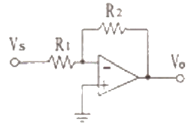
- 15
- -15
- 16
- -16
(정답률: 85%)
11. 다음의 다이오드회로가 정논리일 때 가지는 논리기능은?
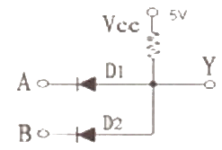
- AND 게이트
- OR 게이트
- NOT 게이트
- NAND 게이트
(정답률: 79%)
12. FET의 일반적인 특성에 대한 설명으로 틀린 것은?
- 입력 임피던스가 매우 높다.
- 이음 대역폭 적이 적다.
- 게이트 전류로 채널전류를 제어한다.
- 다수 캐리어에 의해 동작하는 단극성 소자이다.
(정답률: 44%)
13. 반도체에서 전기장을 가하지 않더라도 캐리어의 밀도 차이에 의해서 흐르는 전류는?
- 포화전류
- 확산전류
- 전도전류
- 드리프트전류
(정답률: 78%)
14. 디지털 변조방식인 QAM 변조방식을 가장 잘 설명한 것은?
- FSK의 변조원리에 진폭변조까지 포함시킨 것
- FSK의 변조원리에 위상변조까지 포함시킨 것
- PSK의 변조원리에 진폭변조까지 포함시킨 것
- PSK의 변조원리에 주파수변조까지 포함시킨 것
(정답률: 64%)
15. 입력전력이 40[mW]일 때 출력전력이 4[W]인 증폭기의 전력 이득은?
- 12[dB]
- 20[dB]
- 30[dB]
- 40[dB]
(정답률: 65%)
16. 정류회로에서 맥동률이 가장 적은 방식은?
- 3상 반파정류
- 3상 전파정류
- 단상 반파정류
- 단성 전파정류
(정답률: 77%)
17. AMVc=10cos30000πt 이고 신호파 Vs=7cos1000πt 일 때 상측파대 주파수는?
- 500[Hz]
- 14500[Hz]
- 15500[Hz]
- 30000[Hz]
(정답률: 74%)
18. 다음의 2진수를 16진수로 변환한 것은?
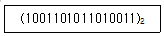
- (89C1)16
- (89C2)16
- (9AD3)16
- (9AD4)16
(정답률: 83%)
19. CR 발진회로에 대한 설명으로 옳은 것은?
- 궤환 소자로 C 만 사용된다.
- R값이 커지면 발진주파수가 낮아진다.
- 이상형에서는 전력증폭도가 29 이상이어야 한다
- 일반적으로 발진주파수가 1[MHz] 이상이며 주파수 가변이 어렵다.
(정답률: 56%)
20. 이상적인 연산증폭기의 특징으로 틀린 것은?
- 오프셋 전압이 1이다.
- 출력 임피던스가 0이다.
- 입력 임피던스가 무한대이다.
- 개방 전압 이득이 무한대이다.
(정답률: 66%)
2과목: 신호기기
21. 교류 NS형 전기선로전환기 내부기기 작동 과정 중 옳은 것은?
- 취급버튼 → 전철제어계전기 → 감속기어장치 → 표시회로
- 전철제어계전기 → 취급버튼 → 감속기어장치 → 표시회로
- 취급버튼 → 감속기어장치 → 전철제어계전기 → 표시회로
- 전철제어계전기 → 감속기어장치 → 취급버튼 → 표시회로
(정답률: 85%)
22. 정격 15kW, 3상 유도전동기의 단자전압이 200V, 전류가 50A일 때 역률[%]은 약 얼마인가?
- 57.7[%]
- 65.8[%]
- 86.6[%]
- 90.6[%]
(정답률: 65%)
23. 3단자 사이리스터가 아닌 것은?
- TRIAC
- SCR
- GTO
- SCS
(정답률: 72%)
24. 자기차동형으로 영구자석 1개와 코일 2개를 갖고 있으며, 코일은 직렬로 접속되어 인가전압의 극성을 바꾸면 정위 또는 반위로 작동하는 계전기는?
- 무극선조계전기
- 유극선조계전기
- 시소계전기
- 완방계전기
(정답률: 85%)
25. 무정전전원장치의 정전시 출력전압의 변동범위는 정격전압의 몇 [%] 이내에 유지 되어야 하는가?
- 10[%]
- 15[%]
- 20[%]
- 25[%]
(정답률: 77%)
26. 시소계전기의 시소 허용한도는 별도로 정해진 것을 제외하고는 몇 [%] 이내로 하여야 하는가?
- ±50[%]
- ±40[%]
- ±30[%]
- ±10[%]
(정답률: 83%)
27. 다음 결선도용 심벌이 나타내는 계전기의 명칭은?
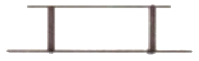
- 거치형 자기유지계전기
- 거치형 유극계전기
- 삽입형 자기유지계전기
- 삽입형 유극계전기(3위)
(정답률: 67%)
28. 전기 연동 장치에서 신호 취급시 선로전환기는 전환되고 접근 쇄정 계전기가 무여자되지 않을 때 접점을 제일 먼저 여자하여야 할 계전기는?
- WLR
- ASR
- ZR
- WR
(정답률: 73%)
29. 직류를 교류로 변환하는 기기는?
- 인버터
- 사이클로 컨버터
- 조퍼
- 회선 변류기
(정답률: 85%)
30. 직류 분권 전동기의 공급전압의 극성을 반대로 하면 회전 방향은?
- 반대로 된다.
- 회전하지 않는다.
- 변하지 않는다.
- 발전기로 된다.
(정답률: 79%)
31. 건널목 경보장치의 경보제어방법 중 자동신호구간에서는 어떤 방식을 사용하는 것을 원칙으로 하는가?
- 신호현지방식
- 궤도회로식
- 점제어식
- 속도조사식
(정답률: 84%)
32. 60Hz, 4극의 유도전동기 슬립이 3%일 경우 매분 회전수는?
- 1676[rpm]
- 1696[rpm]
- 1716[rpm]
- 1746[rpm]
(정답률: 82%)
33. 변압기유로 쓰이는 절연유에 요구되는 특성이 아닌 것은?
- 절연 내력이 클 것
- 점도가 클 것
- 인화점이 높을 것
- 응고점이 낮을 것
(정답률: 80%)
34. 신호설비에서 연속 제어법으로 사용하는 것은?
- 궤도회로
- WR
- SR
- 궤도접촉기
(정답률: 74%)
35. 변압기 병렬운전의 조건으로 알맞지 않은 것은?
- 극성이 같을 것
- 출력이 같을 것
- 권수비가 같을 것
- 정격전압이 같을 것
(정답률: 80%)
36. 정격전압 24V, 코일저항 384Ω인 계전기의 낙하전류[mA]로 알맞은 것은?
- 18.8[mA]이하
- 18.8[mA]이상
- 62.5[mA]이하
- 62.5[mA]이상
(정답률: 57%)
37. 부하가 변하면 심하게 속도가 변하는 직류 전동기는?
- 분권 전동기
- 직권 전동기
- 가동 복권 전동기
- 차동 복권 전동기
(정답률: 88%)
38. 폐색신호기의 설명 중 잘못된 것은?
- 하위에 무유도 표시등을 설치하여 폐색신호기로 사용
- 폐색 구간의 시점에 설치
- 하위에는 식별표지 설치
- 번호는 도착역 장내신호기 바깥쪽 첫 번째 폐색신호기를 1호로 하고 순차적으로 식별표지에 표기
(정답률: 73%)
39. GTO(Gate turn off Thyristor)를 일반 Thyristor와 비교할 때 특징(장점)을 옳게 설명한 것은?
- 유지전류 이하면 Turn off한다.
- 부(-)의 Gate pulse를 인가하면 Turn off한다.
- 전류(轉流)에 의해 Turn off한다.
- 과부하 허용능력이 우수하다.
(정답률: 69%)
40. 변압기의 등가 회로 작성에 불필요한 시험 방법은?
- 반환부하법
- 저항측정시험
- 단락시험
- 무부하시험
(정답률: 78%)
3과목: 신호공학
41. 궤도회로의 한류장치에 대한 설명으로 틀린 것은?
- 전원장치에 과대한 단락전류가 흐르는 것을 말한다.
- 궤도계전기의 회전역률의 위상을 조정해 주는 것이다.
- 직류 궤도회로에 있어서는 저항만을 사용한다.
- 교류 궤도회로에 있어서는 리액턴스만을 사용한다.
(정답률: 95%)
42. 신호보안설비의 신뢰성 확보를 위한 다중화 방식에 해당하지 않는 것은?
- 병렬계
- m/n 다중계
- 대기 다중계
- 직렬계
(정답률: 90%)
43. 선로전환기 정위 결정법에 대한 설명으로 틀린 것은?
- 본선과 본선은 주요한 방향
- 본선과 안전측선의 경우에는 본선방향
- 본선과 측선의 경우에는 본선방향
- 탈선 선로전환기는 탈선시키는 방향
(정답률: 94%)
44. 리드 곡선반경이 크고, 분기각이 작아 열차속도를 없애고 승차감을 향상시킬수 있어 기존선과 고속열차의 연결선 구간에 주로 많이 사용하는 분기기는?
- 10번 분기기
- 8번 분기기
- 노스 가동분기기
- 일반 분기기
(정답률: 95%)
45. 선로전환기가 있는 궤도회로 내에 열차 또는 차량이 점유하고 있을 때 선로전환기의 전환을 못하도록 하는 쇄정은?
- 조사쇄정
- 접근쇄정
- 철사쇄정
- 표시쇄정
(정답률: 100%)
46. 신호계전기실 및 신호원격제어장치의 접지저항은 몇 [Ω]이하인가?
- 5Ω
- 10Ω
- 50Ω
- 100Ω
(정답률: 91%)
47. 경부고속철도 열차제어 설비의 최상위 장치로 진로구성에 관한 명령과 제어, 열차간격을 조정하는 기능, 안전 운행의 확보, 각종 보호 기능 등에 관한 기능을 수행하는 시스템은?
- TCS
- IXL
- LCP
- TIDS
(정답률: 89%)
48. 유도 신호기의 정위는?
- 감속 신호현시
- 소등
- 주의 신호현시
- 진행 신호현시
(정답률: 95%)
49. 고속선의 UM71궤도회로 사용주파수[Hz]가 아닌 것은?
- 2040Hz
- 2400Hz
- 2760Hz
- 3220Hz
(정답률: 77%)
50. 신호기를 현시별로 분류할 때 신호기의 현시를 정지, 진행 또는 주의, 진행으로 점등하여 주는 것은?
- 1위식 신호기
- 2위식 신호기
- 3위식 신호기
- 4위식 신호기
(정답률: 100%)
51. 연축전지가 방전하면 전해액의 비중은?
- 높아진다.
- 낮아진다.
- 불변이다.
- 낮아진 후 높아진다.
(정답률: 90%)
52. 열차의 운전시격을 단축하는 방법이 아닌 것은?
- 고성능 동력차 사용
- 도착선 부설
- 정차시분의 단축
- 폐색구간의 확대
(정답률: 80%)
53. 고속철도 신호설비에서 정합변성기(Matching Unit)의 역할로 옳은 것은?
- 궤도와 UM71 궤도회로장치의 송신기나 수신기사이의 임피던스를 정합시킨다.
- 궤도와 UM71 궤도회로장치 선로의 인덕턴스 효과를 제한시킨다.
- 궤도와 UM71 궤도회로장치 선로의 동조회로에 대한 특성계수를 개선시킨다.
- 궤도와 UM71 궤도회로장치의 송신기 및 수신기의 전압을 일정하게 보상하고 주파수를 높게 해 준다.
(정답률: 82%)
54. 차축온도검지장치에서 차축검지기의 설치에 대한 설명으로 옳은 것은?
- 레일의 외측에 설치한다.
- 검지기의 중상이 센서의 셔터 중심과 일치하도록 한다.
- 레일의 상부에서 검지기 상부까지의 간격은 60mm±1mm로 한다.
- 레일의 측면에서 검지기 측면까지의 간격은 10mm±1mm로 한다.
(정답률: 85%)
55. 건널목 전동차단기에 대한 설명 중 옳지 않은 것은?
- 차단봉이 올라가기 시작하여 동작이 완료되어 정지할 때 까지 8초±10초로 한다.
- 전동차단기 제어전압은 정격값은 0.9~1.2배로 한다.
- 차단봉이 하강하는 시점은 경보가 시작한 후 3초 이상으로 한다.
- 일반형 전동차단기의 차단봉은 전원이 없을 때에는 자체 무게에 의하여 10초 이내에 하강하여 수평을 유지하여야 한다.
(정답률: 85%)
56. 진로상의 선로전환기를 어느 방향으로 전환할 것인지를 결정하여 설정된 진로가 다른 진로에 사용되지 않도록 쇄정하는 계전기는?
- 전철표시계전기
- 전철선별계전기
- 전철쇄정계전기
- 진로조사계전기
(정답률: 89%)
57. CTC의 효과로 적당하지 않은 것은?
- 열차운행의 자동화 및 선로용량의 증대
- 열차운전 정리의 신속 정확화
- 신호보안장치의 고장 감소
- 열차운행의 보안도 향상
(정답률: 89%)
58. 접근쇄정에 대한 설명으로 옳지 않은 것은?
- 접근궤도회로는 신호기 외방에 열차제동거리와 여유거리를 더한 거리 이상으로 한다.
- 접근궤도회로에 열차가 없을 경우에는 즉시 해정한다.
- 접근쇄정의 해정시분은 장내신호기 90초±10%, 출발 신호기 및 입환신호기 30초±10%로 한다.
- 본선의 궤도회로는 출발신호기 없는 입환표지의 접근궤도회로로 사용할 수 없다.
(정답률: 90%)
59. 궤도회로의 단락감도에 대한 설명 중 틀린 것은?
- 궤도회로를 통과하는 열차에 대하여 임피던스본드 및 AF궤도회로 구간은 0.06Ω이상으로 확보
- 교류궤도회로의 단락감도는 착전단 레일위에서 측정
- 직류궤도회로의 단락감도는 송전단 레일위에서 측정
- 병렬궤도회로의 단락감도는 착전단 레일위에서 측정
(정답률: 94%)
60. 교류 궤도회로 단락감도 향상법으로 옳지 못한 것은?
- 레일을 용접, 장대레일화하여 전압강하를 없앤다.
- 착전전압을 증가하고 한류장치의 저항 또는 리액터를 증가한다.
- 궤도계전기를 직렬로 저항 또는 리액터를 삽입한다.
- 위상을 적당히 하여 열차 단락시의 회전 역률을 최대 회전역률에서 이동시킨다.
(정답률: 70%)
4과목: 회로이론
61. △결선된 저항부하를 Y결선으로 바꾸면 소비 전력은? (단, 저항과 선간 전압은 일정하다.)
- 3배
- 9배
- 1/9배
- 1/3배
(정답률: 82%)
62. 대상 3상 Y부하에서 각상의 임피던스가 3+j4[Ω]이고, 부하전류가 20[A]일 때 이 부하에서 소비되는 전 전력은?
- 1400[W]
- 1600[W]
- 1800[W]
- 3600[W]
(정답률: 71%)
63. 최대치 100[V], 주파수 60[Hz]인 정현파 전압이 t=0에서 순시치가 50[V]이고 이 순간에 전압이 감소하고 있을 경우의 정현파의 순시치 식은?
- 100 sin(120πt + 45°)
- 100 sin(120πt + 135°)
- 100 sin(120πt + 150°)
- 100 sin(120πt + 30°)
(정답률: 62%)
64. 두 코일의 자기 인덕턴스가 L1[H], L2[H]이고 상호인덕턴스가 M일 때 결합계수 k는?
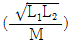
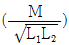
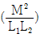
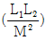
(정답률: 72%)
65. 어떤 회로에서 유효전력 80[W], 무효전력 60[var]일 때 역률은?
- 50[%]
- 70[%]
- 80[%]
- 90[%]
(정답률: 79%)
66. 대칭 6상 전원이 있다. 환상결선으로 권선에 120[A]의 전류를 흘린다고 하면 선전류는?
- 60[A]
- 90[A]
- 120[A]
- 150[A]
(정답률: 73%)
67. R=50[Ω], L=200[mH]의 직렬회로에 주파수 f=50[Hz]의 교류에 대한 역률은?
- 82.3[%]
- 72.3[%]
- 62.3[%]
- 52.3[%]
(정답률: 73%)
68. f(t)=3t2의 라플라스 변환은?
- 3/s2
- 3/s3
- 6/s2
- 6/s3
(정답률: 77%)
69. 다음의 회로가 정저항 회로로 되기 위한 C의 값은?
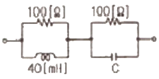
- 4[㎌]
- 6[㎌]
- 8[㎌]
- 10[㎌]
(정답률: 74%)
70. 다음과 같은 브리지 회로가 평형이 되기 위한 Z4의 값은?
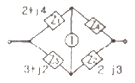
- 2 + j4
- -2 + j4
- 4 + j2
- 4 - j2
(정답률: 65%)
71. 다음의 회로에서 단자 a, b에 걸리는 전압은?
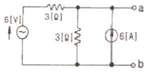
- 12[V]
- 18[V]
- 24[V]
- 6[V]
(정답률: 74%)
72. R-L-C 회로망에서 입력전압을 ei(t)[V], 출력량을 전류 i(t)[A]로 할 때 이 요소의 전달함수는?
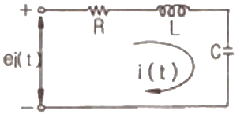
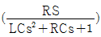
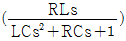
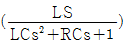
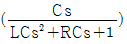
(정답률: 67%)
73. 어떤 회로 소자에 e=125sin377t[V]를 가했을 때 전류 i=25sin377t[V]가 흐른다면 이 소자는?
- 다이오드
- 순저항
- 유도리액턴스
- 용량리액턴스
(정답률: 64%)
74. 선간 전압 200[V], 부하 임피던스 24+j7[Ω]인 3상 Y결선의 3상 유효전력은?
- 192[W]
- 512[W]
- 1536[W]
- 4608[W]
(정답률: 69%)
75. 전송선로에서 무손실일 때 L=96[mH], C=0.6[㎌]이면 특성임피던스는?
- 10[Ω]
- 40[Ω]
- 100[Ω]
- 400[Ω]
(정답률: 75%)
76. 다음과 같은 RC 회로망에서 입력전압을 e1(t), 출력전압을 e0(t)라 할 때 이 요소의 전달함수는? (단, R=100[kΩ], C=10[㎌]이고 초기조건은 0 이다.)
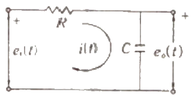
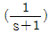
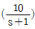
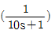
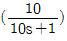
(정답률: 73%)
77. 저항 30[Ω], 용량성 리액턴스 40[Ω]의 병렬회로에 120[V]의 정현파 교류 전압을 가할 때 전체 전류는?
- 3[A]
- 4[A]
- 5[A]
- 6[A]
(정답률: 78%)
78. 기본파의 40[%]인 제 3고조파와 30[%]인 제 5고조파를 포함하는 전압파의 왜형률은?
- 0.9
- 0.7
- 0.3
- 0.5
(정답률: 79%)
79. 어떤 회로망의 4단자 정수가 A=8, B=j2, D=3+j2이면 이 회로망의 C는?
- 2 + j3
- 3 + j3
- 24 + j14
- 8 - j11.5
(정답률: 70%)
80. 다음 함수
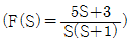
의 역라플라스 변환은?- 2 + 3e-t
- 3 + 2e-t
- 3 - 2e-t
- 2 - 3e-t
(정답률: 53%)
트랜지스터는 베이스-컬렉터 pn 접합과 베이스-이미터 pn 접합으로 이루어져 있습니다. 이때, 베이스와 이미터는 순방향 바이어스가 되어야 합니다. 이는 베이스와 이미터 사이에 전압을 인가하여 전류를 유도하기 위함입니다.
반면, 컬렉터와 베이스는 역방향 바이어스가 되어야 합니다. 이는 컬렉터와 베이스 사이에 전압을 인가하여 전류가 흐르지 않도록 막기 위함입니다.
따라서, "베이스와 이미터는 순방향 바이어스, 컬렉터와 베이스는 역방향 바이어스"가 옳은 바이어스 방법입니다.